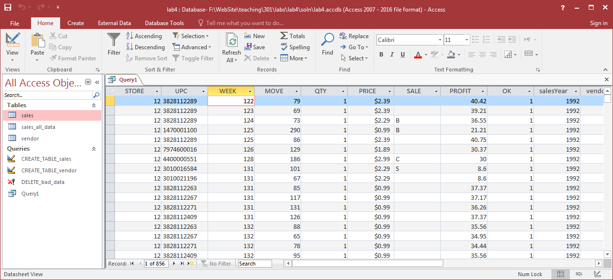
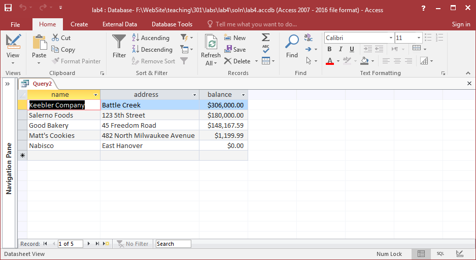
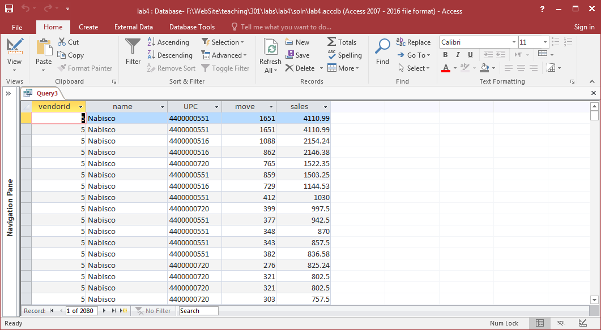
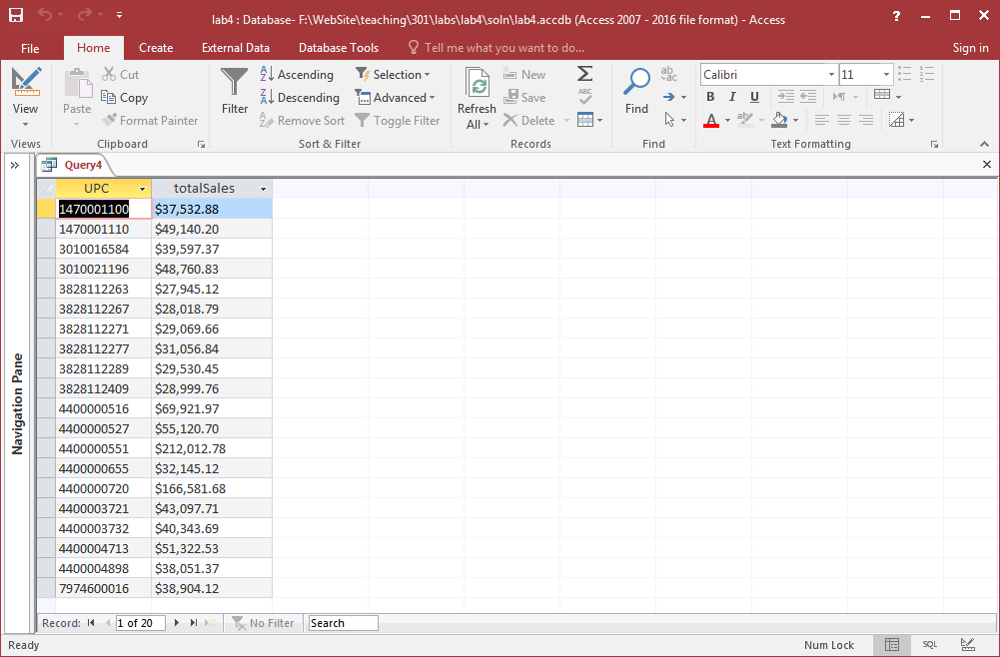
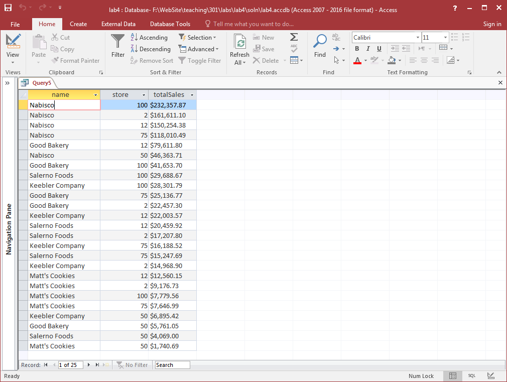
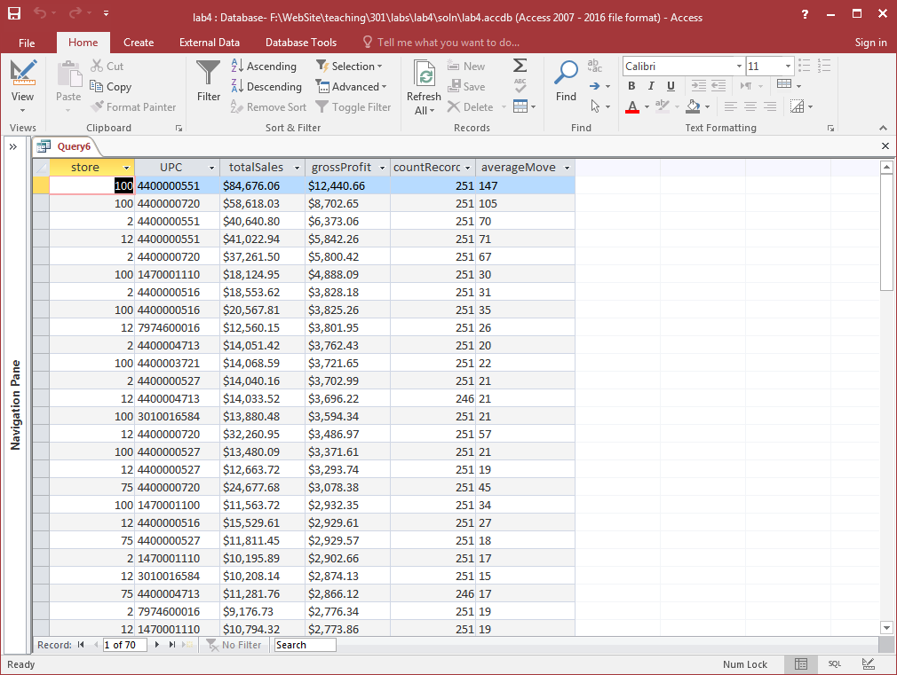

DATA 301 - Introduction to Data Analytics
Lab 4: Creating and Querying a Relational Database in Microsoft Access
In this lab, we will experiment with relational databases and SQL.
Objectives
- Create a table using the CREATE TABLE statement.
- Use INSERT, UPDATE, and DELETE statements to insert, update, and delete data.
- Write SELECT SQL queries that use ordering, filtering, GROUP BY, and aggregate functions for data analysis.
Analysis Problem and Goals
This scenario involves analyzing the real-world, historical business sales data from Dominick's Finer Foods using SQL databases. Our data set consists of the sales for the top 20 products from the Cookie category for 5 stores from 1992 to 1996. The data set containing the item sales data is available as an Access Database as well as an SQL script for loading the data set into the database. In this lab, we will add, insert, update, delete, and query this data using Microsoft Access.
Marking and Evaluation
Marks are awarded by precisely following these requirements:
- CREATE TABLE statement (2 marks) - download the starter Lab 4 Access Database. Using the Data Definition view, create a table with the following information:
- Table name: vendor Fields:
- id with data type integer that is the key
- name with data type holding up to 50 characters
- address with data type holding up to 60 characters
- state with data type holding exactly 2 characters
- upcprefix with data type holding exactly 5 characters
- balance with data type that can hold a currency (money field with up to 10 total digits and 2 decimal places)
- createddate with data type that is a date
- INSERT statement (2 marks) - insert the following rows into the vendor table:
- (1, 'UBC Cookie Company', '3333 University Way', 'BC', '00001', 955463.77, '2016-01-02')
- (2, 'Salerno Foods', '123 5th Street', 'MA', '14700', 150000.00, '2016-01-04')
- (3, 'Keebler Company', 'Battle Creek', 'MI', '30100', 255000.00, '2016-01-08')
- (4, 'Good Bakery', '45 Freedom Road', 'TX', '38281', 123472.99, '2016-01-23')
- (5, 'Nabisco', 'East Hanover', 'NJ', '44000', 0, '2016-01-11')
- (6, 'Matt's Cookies', '482 North Milwaukee Avenue', 'IL', '79746', 999.99, '2016-01-15')
- Note: If a string has a single quote (') in it, you must escape it by putting another single quote in front of it. Example: Joe's would be 'Joe''s'.
- UPDATE statement (2 marks) - write the following UPDATE statements:
- Update all vendor balances to increase them by 20%.
- Update the vendor name to 'Cookie Company', created date to '2016-01-25', and state to 'CA' for vendor with id = 1.
- DELETE statement (2 marks) - write the following DELETE statements:
- Delete all vendors in the state 'BC'. Note: This will not delete any rows.
- Delete vendor with id = 1.
- SELECT statement (12 marks - 2 marks for each query) - write the following queries as SELECT statements:
- Return the sales records (all fields) for store 12 where the move is greater than 50.
- Return the vendor name, address, and balance for vendors created after January 3, 2016. Sort rows by balance descending.
- Return the vendor id, vendor name, product UPC code, move, and sales (price * move/qty) for each product sold by store 100 in 1995. Sort by sales descending.
- Return the total sales (price*move/qty) for each product. The output should have the UPC of a product and the total sales of that product for all stores and for all time.
- Return for each vendor the total sales of their products at each store between the years 1992 and 1995 (inclusive). Sort by total sales descending. The output should have the vendor name, store number, and total sales.
- Return for each store and product, the total sales, gross profit (price*move/qty*profit/100), count of weekly sales records, and average move amount of the product at that store. Only show data for vendors with a name > 'H'. Sort by gross profit descending. The output should have the store number, product UPC, total sales, gross profit, count of records, and average move volume.
Note: To format the output as a currency, the syntax is: format(price, 'Currency'). Click for more info
When complete, submit your Access file named lab4_(yourstudentnum).accdb (e.g. lab4_11111111.accdb) and a text file containing all your SQL statements called lab4.txt (e.g. lab4_11111111.txt) using Connect.
Screenshots
Query 1

Query 2

Query 3

Query 4

Query 5

Query 6

 Home
Home